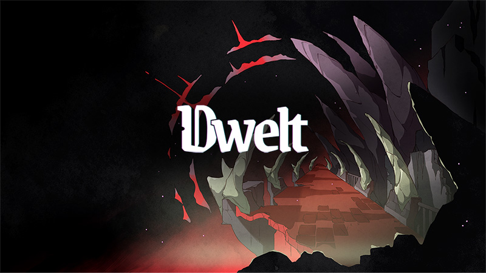

Dwelt (In Development)
Dwelt is an isometric bullet hell game about death and remembrance. As a newly-formed ghost, you can now traverse lands inaccessible to your (formerly) living self; but to do so you must withstand them, navigating and reconciling their impositions in the hopes of recovering a lost, precious memory.